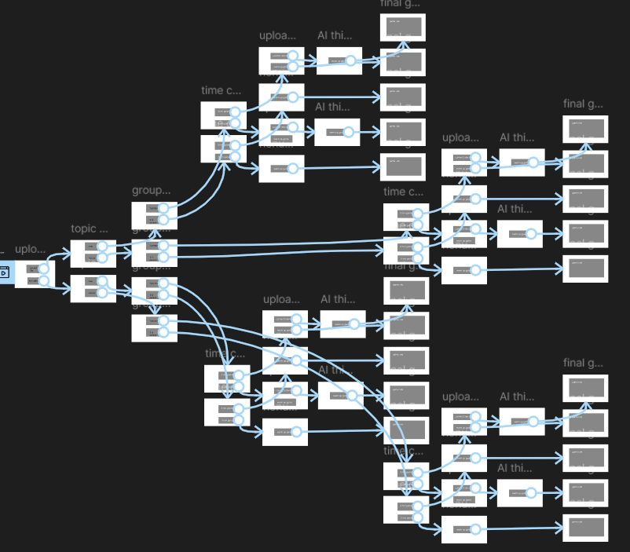

The idea
A warm-up is a small but important part of a class. Teachers may want one, but don't always have time to prepare something suitable.
My first idea was simple: the teacher gives their lesson content and the AI makes a warm-up game. While developing it, I realised lesson content isn't the only thing that decides whether a warm-up works — time, internet access, solo or group work, and whether there's any lesson material all matter. So the concept changed from “generate a game” to “help the teacher decide which game fits their situation”.
Every choice changes something
The final branching structure narrows the options with each decision, instead of showing every possible game at once. The final activity isn't random — it reflects every decision the teacher made. I learned that you don't need many options, but each one needs a consequence: if two choices lead to the same result, the choice stops meaning anything.

Building it with AI
I built the working website in Figma Make. I used AI to prototype the structure and interactions, then tested, found problems and refined my prompts — the first generated version was never the final design. I made or modified all the media myself — no stock images or icons.
← Back to my work